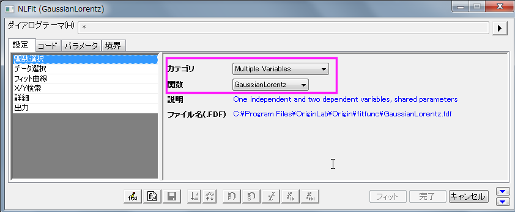

複数変数による非線形フィット
サマリー
Originは複数の独立変数および従属変数を持つフィット関数のサポートをしています。非線形フィット関数の場合、複数の変数をセミコロンで分けて定義することができます。グローバルフィットは1度に１つの関数でしかフィットを行えないので、これはその制限を突破する良い手立てとなります。
Originは複数の独立・従属変数を持った3つのビルトイン関数とともにお手元に届けられます。これらの関数は複数変数カテゴリーから選ぶことができ、これは2種類の関数を合わせた複合関数になります。GaussianLorentz関数はGaussianとLorentz関数の組み合わせで、y0とxcの値を共有しています。


このチュートリアルでは、このような複数変数関数でフィットを実行する方法を示します。
学習する項目
- 非線形複数変数フィットを使い、2つの関数で曲線をフィットする
- フィット変数にデータを割り当てる
ステップ
- 新しいプロジェクトを開くか、新しいワークブックを作成し、\samples\curve fitting\Gaussian.datを開きます。
- 列Aと列Bを選択します。メインメニュー内で解析をクリックし、フィットを指した後に非線形曲線フィットをクリックします。
- NLFitダイアログの左側パネルで関数選択を選びます。右側パネルでMultiple Variablesをカテゴリのドロップダウンメニューから選びます。関数のドロップダウンメニューでGaussianLorentzを選びます。

下段パネルにある曲線サンプルタブからわかるようにこの関数式は同じパラメータy0とxcを共有しています。
- NLFitダイアログの左側パネルでデータ選択を選びます。右側パネルで範囲ノードを展開し、フィット変数にデータを割り当てます。この例では列Bをy1とy2の両方として割り当ることでどちらの関数式も同じデータセットを使用するように設定しています。
- 収束までフィットをクリックしてから、OKをクリックします。結果シートで、GaussianとLorentz関数をオフセットとピークの中心を共有している状態で、パラメータAとwの比較を行いましょう。